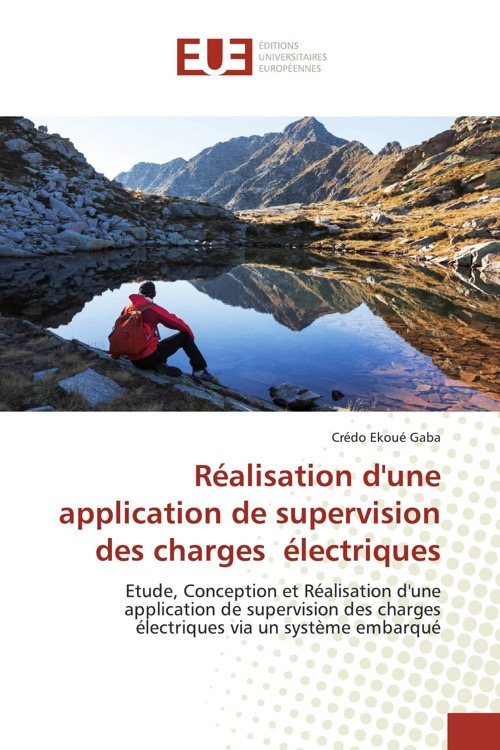

Réalisation d'une application de supervision des charges électriques
Published by : Editions Universitaires européennes
Writed by : Crédo Ekoué Gaba
Published date : 15/04/2020
ISBN-10 : 6138417178
ISBN-13 : 9786138417170
Language :  Français
Français
About Réalisation d'une application de supervision des charges électriques
Le but de ce projet est de concevoir et réaliser une application permettant de superviser les équipements électriques à partir d’un système embarqué. La supervision est une technique industrielle de suivi et de pilotage informatique d’un ensemble de machines ou charges électriques afin d’éviter les consommations supplémentaires en électricité et la réduction de la durée de vie de ces dernières. De cette étude, il en résulte le développement d’un logiciel de supervision en langage Delphi sous RAD-Studio qui, à partir d’un système embarqué, va contrôler les équipements électriques. Les résultats issus de la réalisation du système embarqué sont l’ensemble d’une carte électronique Arduino de type Mega 2560 de 54 E/S programmée en Arduino en fonction du programme Delphi, d’un câble de transmission d’informations USB, des capteurs, des relais de 5 V avec des batteries de 9 V pour leur alimentation, des résistances, buzzers, des LEDs rouges, d’un module de charge alimentant ce système et des charges électriques comme les luminaires, moteurs etc...
Where to buy ?
This book has the ISBN13 "9786138417170".
If it is still available for sale, you can order it in your favorite bookstore, by its publisher or online at
Amazon CA,
Amazon FR,
Amazon JP,
Amazon UK or
Amazon USA depending on your country.